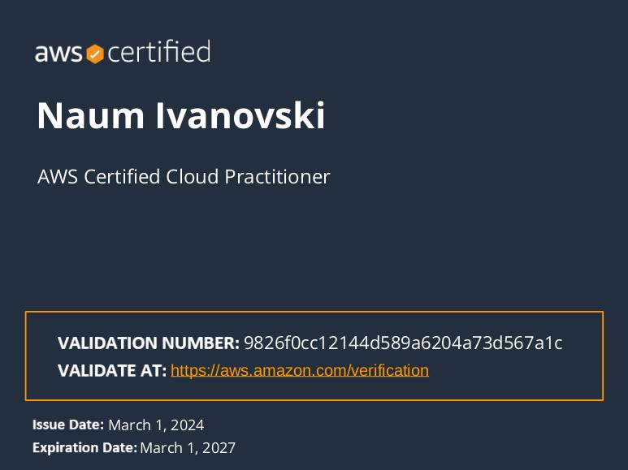
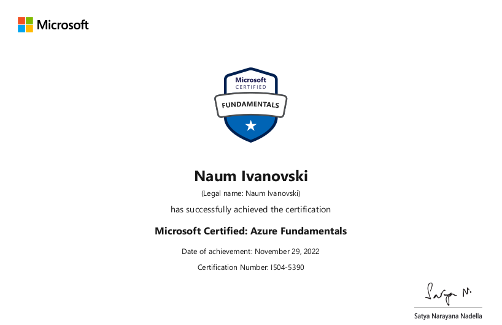
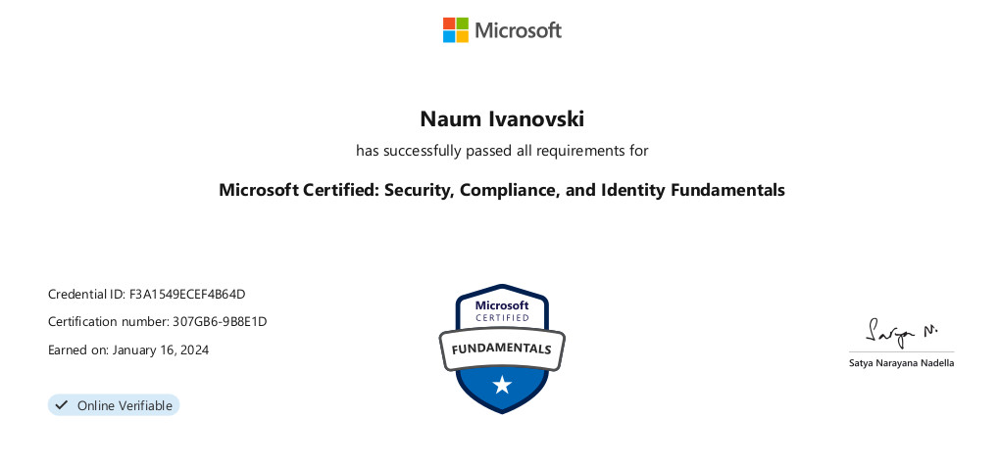
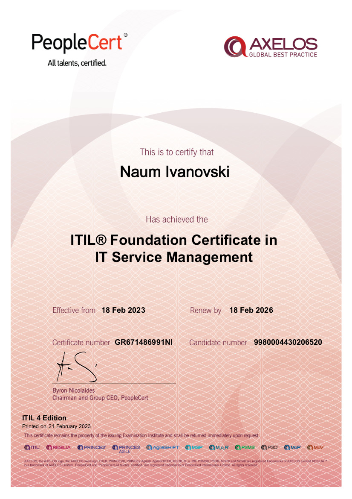
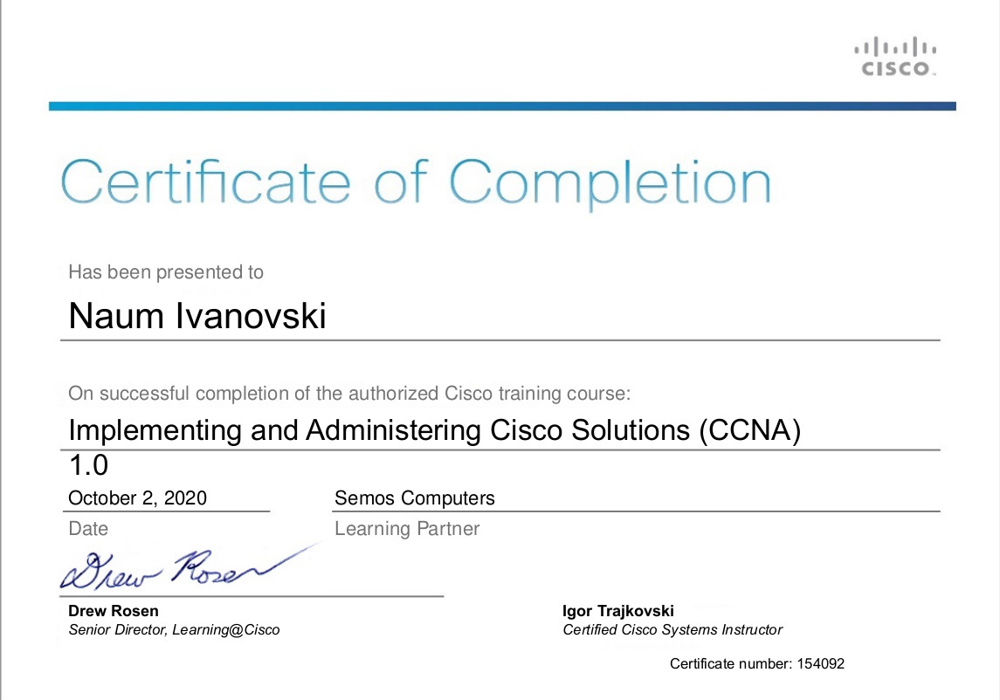
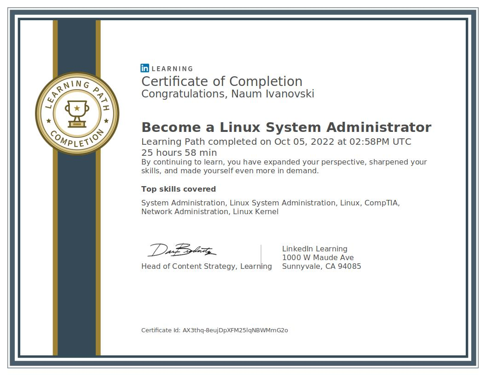
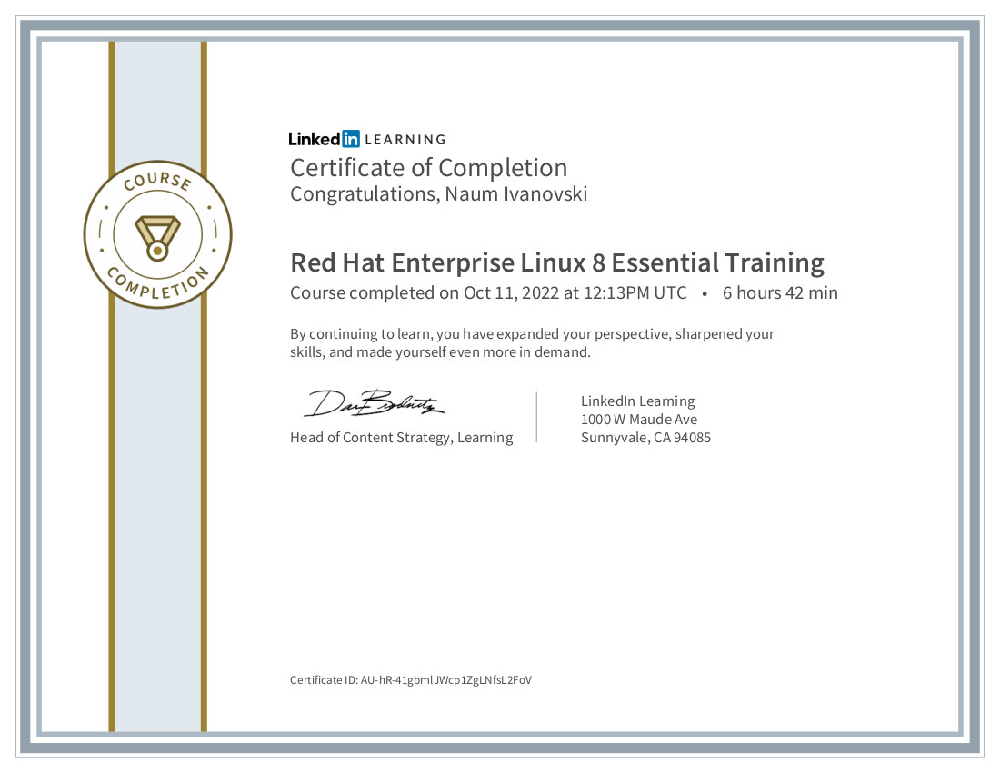
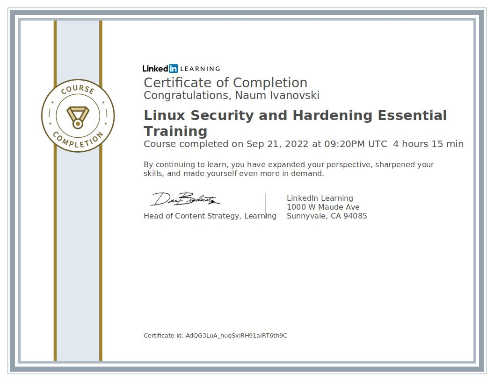
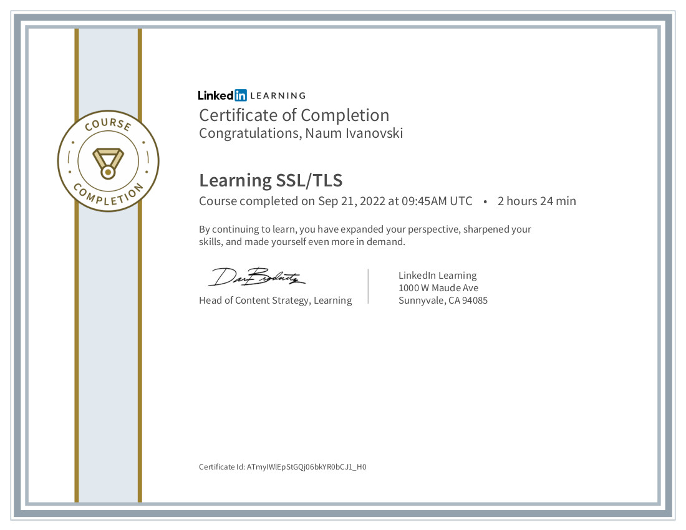
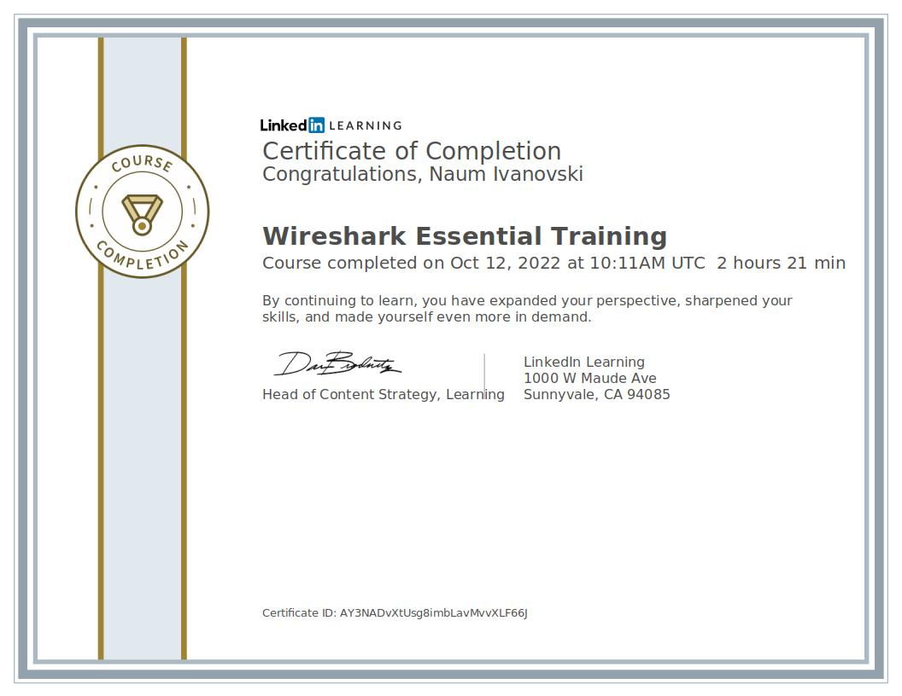

Naum Ivanovski
Support Engineer
Linux Administration
Networking
Troubleshooting
Scripting
Security
Azure Cloud
AWS Cloud
Terraform
CI/CD
Cloudflare
Git
Kubernetes
Docker
AWS Cloud Practitioner

Microsoft Azure Fundamentals

Microsoft Security, Compliance, and Identity Fundamentals

ITIL 4 Foundation

CCNA Training

Linux System Administrator

Redhat Enterprise Linux 8 Essential Training

Linux Security and Hardening Essential Training

Learning SSL/TLS

Wireshark Essential Training

Work Experience
Senior Cloud Operations Support Engineer - Endava DOOEL Skopje
September 2025 - Present
- Involved in Migration Project from On-Prem to Cloud.
- Management of Cloudflare configuration.
- Delivery of Projects on Azure using Infrastructure-as-Code tools such Terraform and Azure DevOps.
- Management of Cloud Cost Budgets.
- Management of Kubernetes Clusters.
- Management of Applications deployed on Kubernetes Clusters in Azure.
- Provide integrations between Azure and Azure DevOps.
- Providing handover and training to new team members.
- Creation and maintanance of documentation.
Cloud Operations Support Engineer - Endava DOOEL Skopje
- Resolution of Incidents and Request related to Cloud Operations within defined SLA.
- Management of Cloudflare configuration.
- Delivery of Projects on Azure using Infrastructure-as-Code tools such Terraform and Azure DevOps.
- Management of Cloud Cost Budgets.
- Providing handover and training to new team members.
- Creation and maintanance of documentation.
January 2025 - September 2025
Linux Support Engineer - Endava DOOEL Skopje
September 2022 - January 2025
- Upgrading/Patching of Linux based systems on-prem and in cloud. (RHEL, CentOS, Oracle Linux, Amazon Linux).
- Configuration of Linux based services. (Webservers, DNS, SNMP, Let's Encrypt, Squid, keepalived)
- Management and renewal of TLS/SSL certificates.
- Management of SFTP solution for a client.
- Ticket and Incident resolution within defined SLA.
- Providing handover and training to new team members.
- Creation and maintanance of documentation.
Senior Specialist for voice and real-time communication services - A1 Macedonia
August 2019 - September 2022
Telecommunication operator in Macedonia providing mobile, fixed, internet,
OTT services to end users. Company part of TAG - Telecom Austria Group.
- Automating housekeeping on Linux servers.
- Automating backups.
- Managing and configuring services on Linux servers. (SLES, Debian, CentOS, RHEL)
- Responsible for operations and maintanance of the fallowing systems:
- USSD Gateway.
- Roaming Steering.
- ACME Session Border Controllers.
- SMS systems.
- MMS systems.
- VAS (Value Added Services) systems, developed in-house using Kannel
(an open-source WAP gateway).
- VAS applications running on TIBCO ESB.
- Problem troubleshooting and traffic analisys.
- Help customers integrate with existing platforms.
- Monitoring of processes and alarming. (using Monit, Grafana and ELK stack)
- Documetation of systems.
- Project Management.
- Close cooperation with company departments (CRM, Billing, Marketing,
IT Bussiness Solutions, IT Infrastructure, IT Networking, IT Security).
- Maintaining close cooperation with company vendors.
- Incident management and resolution.
- Developing web-based in-house tools for Contact Centar
(using PHP, Bash, HTML5, CSS3, Bootstrap4, SQL)
Junior Value Added Services Engineer - one.VIP DOOEL Skopje
March 2018 - August 2019
- Provisioning of new services for 3rd party providers.
- Development of in-house solutions.
- Providing reports for service utilization.
Education
Saints Cyril and Methodius University in Skopje
2013 - 2017
Faculty of Electrical Engineering and Information Technologies
Bachelor of Science: Electrical Engineering and Information Technologies
High School "SETU Mihajlo Pupin" in Skopje
2009 - 2013
{kind=link}
{kind=link}
{kind=link}
{kind=link}
{kind=link}
{kind=link}
{kind=link}
{kind=link}
{kind=link}
{kind=link}